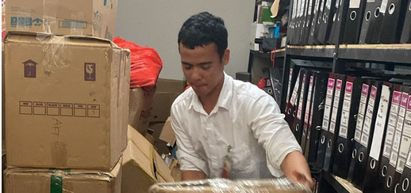
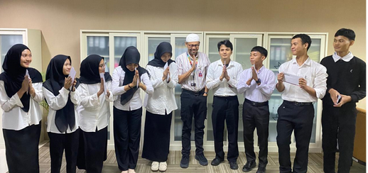
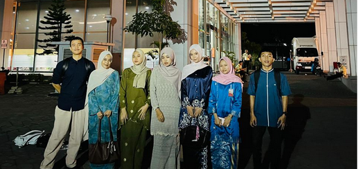
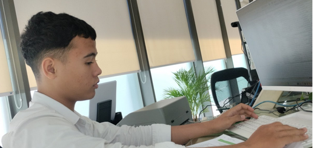
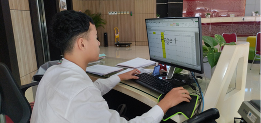
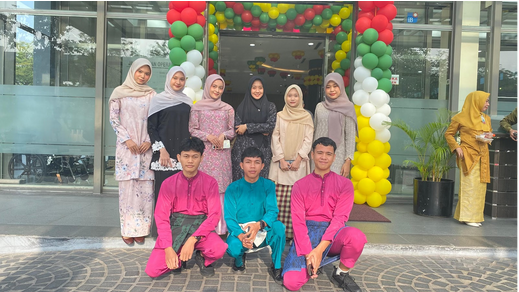

Three Month Journey
Internship at 
Cabang Utama · 2025
Perjalanan 3 Bulan
Catatan aktivitas selama masa magang
1
Bulan Pertama
Pengenalan
Orientasi & Adaptasi Lingkungan Kerja
- Mempelajari tata tertib dan SOP Bank Riau Kepri Syariah
- Perkenalan diri kepada seluruh staf
- Memahami produk-produk syariah
- Memahami tugas & tanggung jawab magang
- Mengikuti kegiatan informal di cabang
2
Bulan Kedua
Aktivitas Inti
Terlibat Langsung dalam Operasional
- Membundle voucher Customer Service
- Penjualan pulsa kepada nasabah
- Membantu proses pembukaan rekening
- Input data konsen
- Distribusi voucher untuk ditandatangani
3
Bulan Ketiga
Penutupan & Kesimpulan
Refleksi & Perpisahan
- Menyusun laporan magang
- Mendokumentasikan seluruh kegiatan
- Penerimaan THR
- Kegiatan perpisahan sederhana
Magang di BRK enak banget! Staffnya ramah-friendly, dapat gaji + THR, ikut makan bareng, suasana kekeluargaan ✨
Galeri Foto Magang
Dokumentasi momen berharga selama 3 bulan





